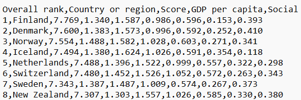

Rad sa datotekama
Do sada su podaci bili kodirani u naše Pajton programe, a izlaz je bio na konzolu (terminal, ekran). Naravno, često će biti potrebno unositi podatke iz spoljne datoteke kao i da podatke zapisujemo u izlaznu datoteku. Da bi to postigao, Pajton ima objekat file za rad sa datotekama.
Datotečni objekat se kreira otvaranjem datoteke čije ime unesemo, i odgovarajućim režimom datoteke (mode). Ime datoteke je string i može biti dato kao apsolutna putanja ili kao putanja relativna u odnosu na direktorijum u kome se program izvršava. Vrednosti za parametar mode su date u sledećoj tabeli:
|
Tip datoteke i režim |
|---|---|
r |
Text, samo čitanje datoteke (podrazumevana vrednost) |
w |
Text, upisivanje u datoteku (ako postoji datoteka sa istim imenom, biće obrisana) |
x |
Text, upisivanje u datoteku (ako postoji datoteka sa istim imenom, javiće se greška) |
a |
Text, upisivanje na kraj datoteke |
r+ |
Text, pisanje i čitanje |
rb |
Binarna, samo čitanje datoteke (podrazumevana vrednost) |
wb |
Binarna, upisivanje u datoteku (ako postoji datoteka sa istim imenom, biće obrisana) |
ab |
Binarna, upisivanje na kraj datoteke |
rb+ |
Binarna, pisanje i čitanje |
Na primer, da biste otvorili datoteku za pisanje u tekstualnom režimu, i u isto vreme kreirali datotečni objekat f, to činite naredbom:
f = open('moja_datoteka.txt', 'w')
Objekti datoteke se zatvaraju metodom
close: na primer,f.close()Python zatvara bilo koji otvoreni objekt datoteke automatski kada se program završi
Upisivanje u datoteku
Metoda write upisuje string u tesktualnu datoteku i vraća broj upisanih karaktera:
f = open('moja_datoteka.txt', 'w')
f.write('Pozdrav svima!\n') #\n je komanda da se pređe u novi red
15
Ugrađena funkcija print koju smo često koristili može da ima kao argument ime datotečnog objekata, gde može da preusmeri izlaz iz nekog koda, tako da se rezultat upiše u datoteku. Na primer:
print(5, 'Novembar', 2023, sep=', ', file=f)
Upisuje '5, Novembar, 2023\n' u datoteku otvorenu kao objekat datoteke f umesto na ekran. Primetite escape sekvencu \n, za prelazak u novi red.
Datoteku zatvaramo metodom close.
f.close()
Probajte da pronađete novokreiranu datoteku u vašem radnom direktorijumu
Vežba 1.
Napisati kod koji će u datoteci stepeni.txt upisati prva tri stepena prirodnih brojeva manjih od 100. Za svaki prirodan broj, rezultate upisati u jednom redu, odvojene zarezom.
Rešenje:
f = open('stepeni.txt', 'w')
for i in range(1,101):
print(i, i**2, i**3, sep=', ', file=f)
f.close()
Čitanje datoteke
Da biste pročitali n bajtova (znakova) iz objekta datoteke, pozovite f.read(n). Ako je n izostavljeno, ceo fajl se čita. Metod readline() čita jedan red iz datoteke do znaka novog reda (uključujući i njega). Sledeći poziv readline() čita u sledećem redu, i tako dalje. I read() i readline() vraćaju prazan string kada stignu do kraja datoteke. Da biste odjednom pročitali sve redove u listu stringova, koristite f.readlines().
Objekti datoteke su iteratabilni, a petlja preko (tekstualne) datoteke vraća njene redove jedan po jedan.
Metod read datotečnog objekta vraća celokupan sadržaj datoteke kao jedan string.
f = open('moja_datoteka.txt', 'r') # Otvaramo datoteku za čitanje
f.read() # Cela datoteka je sada string
'Pozdrav svima!\n5, Novembar, 2023\n'
Prirodnije je da sadržaj datoteke prikažemo dodavanjem print naredbe posle čitanja datoteke, ali pre toga moramo pokazivač datotečnog objekta vratiti na početak datoteke:
f.seek(0) # Kako nismo zatvorili datoteku, pokazivač je na kraju.
# Metod seek sa argumentom 0 nas vraća na početak datoteke.
# Istražite koje još argument može da ima seek.
print(f.read()) # Prirodniji prikaz celog sadržaja
f.close() # Zatvaramo datoteku
Datotečni objekti su iterabilni pa možemo da iteriramo preko njega ili stringa koji čuva njen sadržaj:
for char in open('moja_datoteka.txt', 'r'): # char referiše na karakter u stringu
print(char, end='') # string ima escape karaktere za novi red, pa štampamo ne formirajući nove redove
f.close()
Pozdrav svima!
5, Novembar, 2023
Metodom readline() možemo datoteku da čitamo red po red:
f = open('moja_datoteka.txt', 'r') # Otvaramo datoteku za čitanje
print(f.readline(), end='') # Štampamo prvi red
print(f.readline(), end='') # Štampamo drugi red
f.close()
Pozdrav svima!
5, Novembar, 2023
Kako simbol '' odgovara logičkoj konstanti False, while petljom možemo pročitati sve redove, red po red:
f = open('moja_datoteka.txt', 'r') # Otvaramo datoteku za čitanje
red = f.readline() # Učitavamo prvi red
while red: # Sve dok ne dođemo do praznog reda
print(red, end='') # Štampamo red; Red ima escape karaktere za novi red, pa štampamo ne formirajući nove redove
red = f.readline() # Učitavamo novi red
f.close() # Zatvaramo datoteku
Pozdrav svima!
5, Novembar, 2023
Metod readlines() sve redove datoteke čuva u listi, tako što je svaki element te liste jedan string koji sadrži sve podatke iz jednog reda:
f = open('moja_datoteka.txt', 'r') # Otvaramo datoteku za čitanje
redovi = f.readlines() # Učitavamo sve redove i svaki red je element liste
for red in redovi: # Iteriramo po listi redova
print(red, end='') # Štampamo red; Red ima escape karaktere za novi red, pa štampamo ne formirajući nove redove
f.close() # Zatvaramo datoteku
Pozdrav svima!
5, Novembar, 2023
Vežba 2.
Pročitati brojeve iz datoteke stepeni.txt generisane u u prethodnoj vežbi.
Rešenje:
Da biste pročitali brojeve iz datoteke stepeni.txt, kolone se moraju konvertovati u liste celih brojeva. Da biste to uradili, svaka linija mora biti podeljena na svoja polja i svako polje eksplicitno konvertovano u int:
f = open('stepeni.txt', 'r')
kvadrati, kubovi = [], []
for linija in f.readlines():
# print(linija) # Otkricemo ovu liniju koda i želimo da pogodimo šta će se ispisati
polja = linija.split(',')
# print(polja) # Isto to ćemo posle uraditi i za polja
kvadrati.append(int(polja[1]))
kubovi.append(int(polja[2]))
f.close()
# Test 1:
print(kvadrati)
# Test 2
n = 50
print(n, 'na treći stepen je', kubovi[n-1])
Rad sa datotekama koje sadrže specijalne karaktere
Pokušajmo da otvorimo i prikažemo u datoteku datoteka.txt:
d = open("datoteka.txt", "r")
d.read()
---------------------------------------------------------------------------
UnicodeDecodeError Traceback (most recent call last)
Cell In[20], line 2
1 d = open("datoteka.txt", "r")
----> 2 d.read()
File ~\Miniconda3\Lib\encodings\cp1252.py:23, in IncrementalDecoder.decode(self, input, final)
22 def decode(self, input, final=False):
---> 23 return codecs.charmap_decode(input,self.errors,decoding_table)[0]
UnicodeDecodeError: 'charmap' codec can't decode byte 0x90 in position 14: character maps to <undefined>
Razlog zbog kojeg se javlja greška je što trenutno Python ne prepoznaje naše slovne oznake. Problem rešavamo parametrom encoding="utf8":
d=open("datoteka.txt", encoding="utf8") # sklonili smo "r" jer je podrazumevano
print(d.read())
d.close()
Драган Аздејковић
Младен Стаменковић
Јована Милеуснић
Apsolutno referenciranje
Često nam datoteka neće biti u folderu u kojem se nalazi .py fajl. Aposlutno referenciranje zahteva da znamo adresu fajla koji otvaramo:
f = open(r"C:\Users\Dragan Azdejkovic\OI_25_jb1\Podaci\datoteka.txt", encoding="utf8")
print(f.read())
f.close()
Драган Аздејковић
Младен Стаменковић
Јована Милеуснић
Relativno referenciranje
Apsolutno referenciranje problematično je zbog toga što je ova adresa relevantna samo na kompjuteru na kojem je napisan kod. Relativno referenciranje otvara biblioteku u zavisnosti od pozicije radnog direktorijuma. Metod getcwd iz standardne biblioteke os nam može prikazati koji je to naš radni direktorijum u kojem se nalazimo:
import os
os.getcwd()
'C:\\Users\\Dragan Azdejkovic\\Desktop\\Nastava - OI 25'
Vežba 3.
Vratiti se jedan korak unazad u hijerarhiji u odnosu na trenutni folder, a zatim otvoriti/kreirati folder „Podaci” i nekim editorom, recimo Notepad++, kreirati datoteku datoteka2.txt sa sledećim sadržajem:
Daglas Adams (Kembridž, 11. mart 1952 — Santa Barbara, 11. maj 2001) je bio britanski radio-dramaturg i pisac najpoznatiji po seriji knjiga Vodič kroz Galaksiju za autostopere. Za njegovog života, ovaj serijal je bio prodan u više od petnaest miliona primeraka.
Rešenje:
dat = open("../Podaci/datoteka2.txt", encoding = "utf8") # sa ../ vraćamo se unazad jedan korak
print(dat.read())
f.close()
Upotreba with
Komanda with korisna je kod otvaranja datoteka i ima sledeću sintaksu
with
Naredba with će automatski zatvoriti datoteku nakon ugnežđenog bloka koda. Prednost korišćenja naredbe with je u tome što se garantuje zatvaranje datoteke bez obzira na to kako se izlazi iz ugnežđenog bloka. Ako se izuzetak dogodi pre kraja bloka, on će zatvoriti datoteku pre nego što izuzetak bude uhvaćen od strane spoljnog rukovaoca izuzetkom. Ako bi ugnežđeni blok sadržao naredbu return, ili naredbu continue ili break, naredba with bi automatski zatvorila datoteku i u tim slučajevima. Na primer:
fajl = "datoteka.txt"
with open("datoteka.txt", encoding="utf8") as f:
for line in f.readlines():
print(line, end="")
Драган Аздејковић
Младен Стаменковић
Јована Милеуснић
Učitavanje .csv fajlova
CSV fajlovi (comma-separated value) predstavlja tekstualnu datoteku za skladištenje tabelarnih fajlova, obično kreiranih u ekselu. Svaki red tabele zapisuje se u zasebnom redu tekstualne datoteke. Vrednosti unutar jednog reda razdvajaju se obično zarezom. Prvi red fajla najčešće predstavlja zaglavlje sa opisom podataka unutar tabele.
Evo kako izgleda csv fajl otvoren kao .txt dokument:
{kind=link}

Slika 10. Početni deo csv datoteke
Datoteke tipa csv učitavamo koristeći modul csv i metodu .reader(), koja kreira iterabilni objekat:
import csv
with open(r'Podaci\happiness2019.csv') as csv_file:
csv_citaj = csv.reader(csv_file, delimiter=',')
print(type(csv_citaj))
<class '_csv.reader'>
Metod csv_reader kreira iterabilni objekat kroz csv fajl. Svaki red tabele sada je jedan korak naše iteracije.
with open('Podaci\happiness2019.csv') as csv_file:
csv_citaj = csv.reader(csv_file, delimiter=',')
for linija in csv_citaj: # Primetite da je for petlja unutar with jer se fajl odmah zatvara po završetku with komande
print(linija)
print(type(linija)) # Svaka linija sada je lista podataka, tj jedan red naše tabele
Ili koristeći sagledavanje (comprehensions):
with open('Podaci\happiness2019.csv') as csv_file:
csv_citaj = csv.reader(csv_file, delimiter=',')
[print(linija) for linija in csv_citaj]
Metoda DicReader kreira iterabilni objekat iz csv datoteke koji generiše rečnike za svaki red sem prvog. Atribut filednames tog iterabilnog objekta sadrži elemente zaglavlja datoteke i formira ključeve za rečnike:
import csv
with open('Podaci\happiness2019.csv', 'r') as f:
d_reader = csv.DictReader(f)
headers = d_reader.fieldnames # Dobija imena ključeva iz objekta DictReader i čuva ih u listi
for line in d_reader: # linija referiše na rečnik sa ključevima iz headers
print(line['Country or region']) # Štampa vrednost rečnika sa datim ključem
print(headers)
Učitavanje .json fajlova
JSON (JavaScript Object Notation) predstavlja jedan od čestih načina skladištenja podataka.-JSON format je najčešći oblik za prenos podataka modernih aplikacija. Python ima modul json koji omogućava rad sa ovakvim podacima. Mi ćemo koristiti ovde metode loads i dumps. Metod json.loads() uzima string kao input i kreira od njega listu rečnika.
import json
f = open (r"Podaci\stanovnistvo.json", "r", encoding = "utf-8")
data = json.loads(f.read())
f.close()
print(type(data))
print(type(data[0]))
data[:2]
Metod .dumps() radi inverznu stvar. Uzima listu ili rečnik i pretvara ga u string u .json formatu
print(json.dumps(data, indent=2))
type(json.dumps(data, indent=2))
Datoteke tipa Pickle
U određenim situacijama želimo da sašuvamo rečnike, torke, liste ili bilo koji drugi tip podataka na disk i koristimo ga kasnije ili pošaljemo kolegama. Tu imamo modul pickle: on može zapakovati Python objekat tako da ga možemo sačuvati na disk u obliku datoteke i kasnije po potrebi preouzeti.
Zapisivanje u pickle datoteku
Kako bi primenili pickle za pakovanje nekog objekta, koristimo pickle.dump funkciju koja ima dva argumenta:
prvi je Python objekat koji treba sačuvati
drugi je datotečni objekat dobijen preko
openfunkcije
Na primer:
import pickle
recnik_a ={"Dragan":1, "Mladen":2, "Jovana":3}
pickle.dump(recnik_a, open('Podaci/test.pkl','wb'))
Čitanje pickle datoteke
Sada, metodom load pozivamo pickle datoteku koju smo upravo sačuvali na disku.
moj_recnik = pickle.load(open('Podaci/test.pkl','rb'))
moj_recnik
{'Dragan': 1, 'Mladen': 2, 'Jovana': 3}